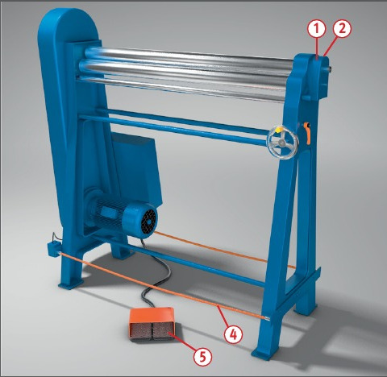
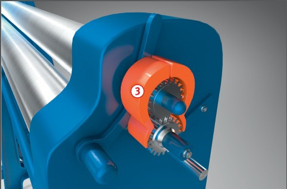

Kleidung und Schutzhandschuhe
können von den Walzen
erfasst und eingezogen werden
und es kann insbesondere im
Bereich der Hände zu schweren
Verletzungen kommen.


Schutzmaßnahmen
Verkleidung der Antriebszahnräder nicht entfernen .
Bei Rundmaschinen mit ausschwenkbaren Oberwalzen darf die Verkleidung der Zahnräder schwenkbar sein .
Bei handbetriebenen Rundmaschinen muss das Zahnradpaar neben der Handkurbel mit einer Abdeckung versehen sein .
Kraftbetriebene Rundmaschinen
sind mit Handschutzeinrichtungen in Form von Schaltern
ohne Selbsthaltung und Not-Halt-Befehlseinrichtungen auszurüsten (Betätigung evtl. über
Reißleine oder Fußschalter
).
Kraftbetriebene Rundmaschinen
mit Spannhubbegrenzung von 8 mm oder Zweihandschaltung oder Drei-Stufen-Sicherheitsschalter ausrüsten.
Soweit möglich, Handabweiser,
z. B. Stangen, Abdeckbleche usw., vorsehen.
Bei der Aufstellung von
Rundmaschinen auf mögliche Quetsch- und Scherstellen – auch während des Biegevorganges – achten.
Niemals Handschuhe tragen.
Unterarmschutz mit Schutz der Handflächen empfohlen.
Beschäftigungsbeschränkungen
Jugendliche über 15 Jahre
dürfen nur unter Aufsicht eines Fachkundigen und wenn es die Berufsausbildung erfordert an kraftbetriebenen Rundmaschinen arbeiten.
Jugendliche unter 15 Jahre
dürfen nicht an diesen Maschinen
beschäftigt werden.